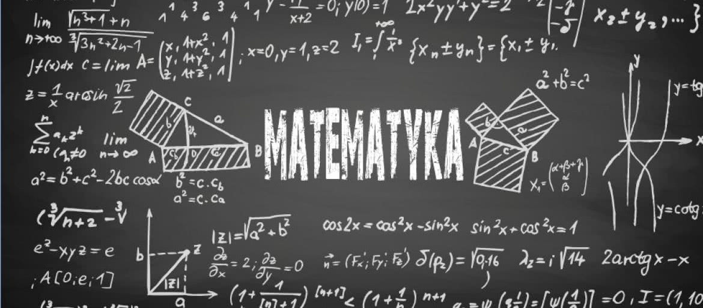

Witaj w notatkach z Matematyki dla VI klasy
Znajdujesz się w: Home / Klasa VI / Spis Matematyka

Rozdział I: LICZBY I DZIAŁANIA
Temat1: Rachunki pamięciowe: dodawanie i odejmowanie Temat2: O ile więcej, o ile mniej Temat3: Mnożenie i dzielenie Temat4: Dzielenie z resztą Temat5: Zadania tekstowe Temat6: Kolejność wykonywania działańRozdział II: SYSTEMY ZAPISYWANIA LICZB
Temat1: Porównywanie liczb naturalnych Temat2: Rachunki pamięciowe na dużych liczbach Temat3: Jednostki monetarne - złoty i grosz Temat4: Jednostki masy i długości Temat5: Z kalendarzem za pan brat Temat6: Godziny na zegarachRozdział III: DZIAŁANIA PISEMNE
Temat1: Dodawanie pisemne Temat2: Odejmowanie pisemne Temat3: Mnożenie pisemne Temat4: Mnożenie pisemne przez liczby wielocyfrowe Temat5: Dzielenie pisemne przez liczby jednocyfrowe Temat6: Zadania tekstoweRozdział IV: FIGURY GEOMETRYCZNE
Temat1: Proste, półproste, odcinki Temat2: Mierzenie długości Temat3: Długość i wielkość kątów Temat4: Wielokąty Temat5: Prostokąty, kwadraty i ich obwody Temat6: Skala i skala na planachRozdział V: UŁAMKI ZWYKŁE
Temat1: Ułamek jako część całości Temat2: Liczby mieszane Temat3: Porównywanie ułamków Temat4: Rozszerzanie i skracanie ułamków Temat5: Ułamek jako wynik dzielenia Temat6: Dodawanie i odejmowanie ułamków zwykłychRozdział VI: UŁAMKI DZIESIĘTNE
Temat1: Ułamki o mianownikach 10, 100, 1000... Temat2: Zapisywanie wyrażeń dwumianowanych Temat3: Różne zapisy tego samego ułamka dziesiętnego Temat4: Porównywanie ułamków dziesiętnych Temat5: Dodawanie ułamków dziesiętnych Temat6: Odejmowanie ułamków dziesiętnych Rozdział VII: POLA FIGUR
Temat1: Co to jest pole figury? Temat2: Jednostki pola Temat3: Pole prostokąta Temat4: Zależności między jednostkami pola Temat5: Wycinanki i układanki Temat6: Pole kwadratu i trójkątaRozdział VIII: PROSTOPADŁOŚCIANY I SZEŚCIANY
Temat1: Opis prostopadłościanu Temat2: Siatki prostopadłościanu Temat3: Pole powierzchni prostopadłościanu Temat4: Opis sześcianu Temat5: Siatka sześcianu Temat6: Pole Powierzchni sześcianu